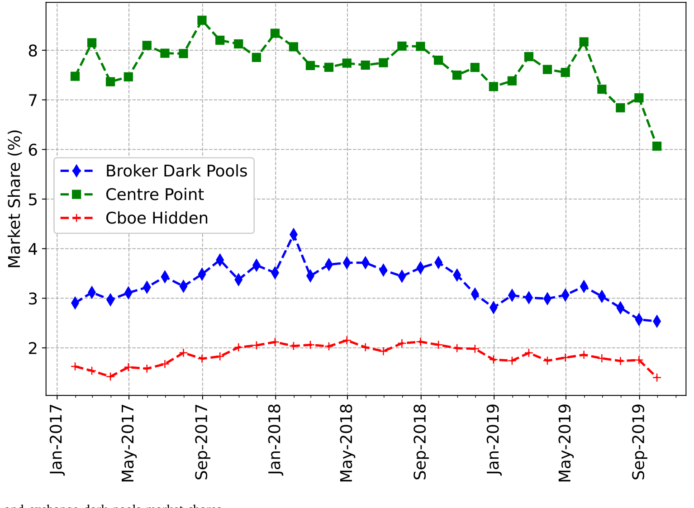
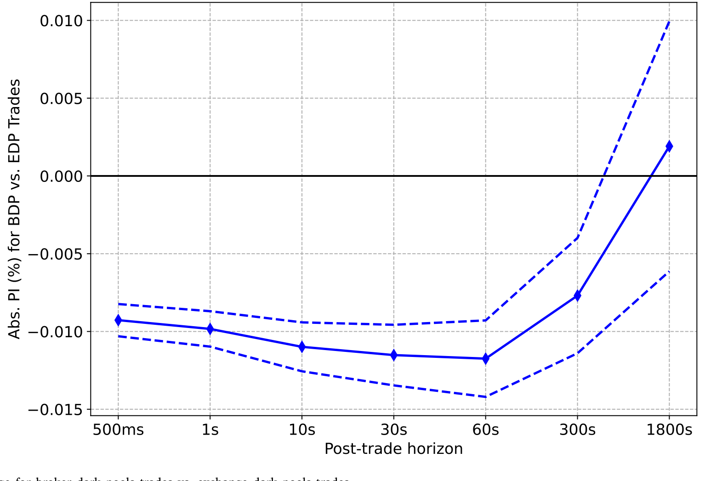
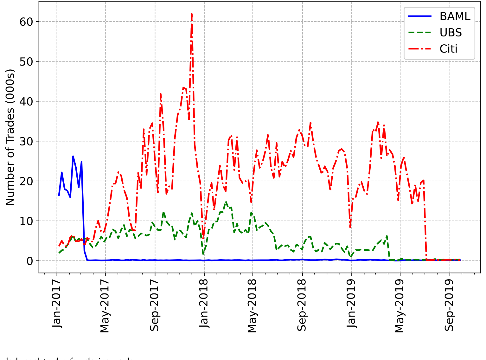
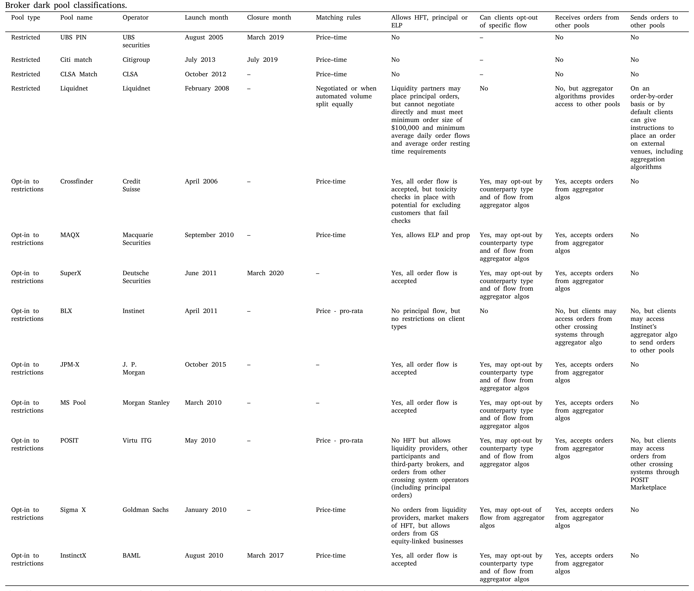
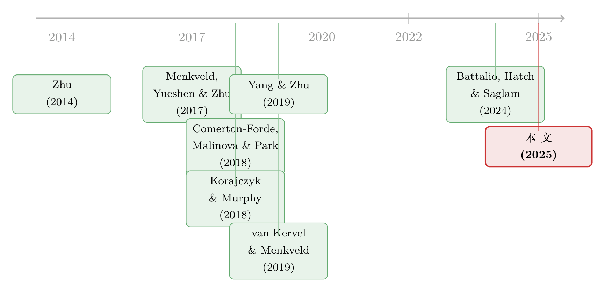

谁能进这间「暗房」，决定了你的成交成本
本文读的是 Brugler & Comerton-Forde (2025, Journal of Financial Economics)：暗池并非铁板一块——那些把高频交易者「关在门外」的暗池，其成交的信息泄露 (information leakage) 与逆向选择风险 (adverse selection risk) 都显著更低。作者用三家券商暗池在样本期内意外关闭这一外生冲击，证明这个差异是因果的。一句话：能不能挑选你的对手方，本身就是一种值钱的执行质量。
1 一个被忽略的问题：暗池其实长得都不一样
先说一个几乎所有人都默认、却很少有人较真的前提。
在讨论暗池 (dark pool) 的时候，文献里通常把它当成一个同质的东西：一个不提供盘前透明度 (pre-trade transparency)、让大单可以「藏」起来慢慢成交的场所。机构投资者用它来压低自己的交易足迹和价格冲击。听上去顺理成章。
但只要往里多看一眼，你会发现暗池之间的差别大得惊人：定价方式不同（有的钉在中间价，有的不是）、能不能和盘前透明的「亮单 (lit orders)」撮合不同、最重要的——谁能进来交易也不同。这最后一条，就是本文的主角：访问限制 (access restrictions)，也就是对「哪些交易者可以、哪些不可以进入某个场所」的限制。
为什么这条值得较真？因为它直接对应着机构投资者最怕的那个对手方。当你的一笔大单被算法切成无数小的「子单 (child order)」洒进暗池，任何成交了的对手方都能从中嗅到你后续订单流的方向，从而抢在你前面交易。这正是回头交易 (back-running)、订单预判策略 (order anticipation strategies) 和抢单 (sniping) 的温床，而干这些事的通常被归到高频交易者 (high frequency traders, HFTs) 和电子流动性提供者 (electronic liquidity providers, ELPs) 头上。
注意作者反复强调的一个区分：这里说的是订单流信息泄露（对手方学到了你订单流的方向），而不是关于公司基本面的信息泄露。整篇文章谈的「信息」，都是前者。
于是一个自然的问题浮出水面：如果一个暗池能把 HFT/ELP 挡在门外，那在里面成交，是不是真的更「干净」？ 这正是监管者在拍板时缺的那块证据——美国允许 ATS 设访问限制（市场份额低于 5% 即可），欧盟却在 2018 年的 MiFID II 里直接把能设限的「券商撮合网络 (Broker Crossing Networks, BCN)」一刀切掉了。两种相反的政策选择，背后都没有实证支撑。
（关于「抢在别人前面交易」这件事在另一个市场的极端形态，可参见《暗黑森林里的「过路费」：抢跑、MEV 与区块链上那场没谈拢的分赃》。）
2 为什么是澳大利亚
要回答这个问题，你需要一个能把「带限制的暗池」和「不带限制的暗池」摆在一起、同台比较的市场。澳大利亚恰好是这样一个近乎完美的实验场。
原因有两点。其一，澳洲市场同时存在两类暗池：券商暗池 (broker dark pools)（相当于美国的 ATS）可以设置访问限制；而交易所暗池 (exchange dark pools)——这是澳洲独有的品种，即 ASX 的 Centre Point 和 Cboe 的隐藏订单——被法律要求向所有交易者类型无限制开放。这就天然形成了「限制 vs. 不限制」的对照。其二，也是数据上的关键优势：在澳洲，单笔交易的场所是可以识别的。这在美国是做不到的——美国研究者只能依赖 FINRA 每周或每两周一次的暗池汇总报告，根本看不到单笔成交。
作者把样本期内（2017 年 1 月 1 日到 2019 年 9 月 30 日）ASX All Ordinaries 指数里所有股票的暗池交易都纳进来。数据来自 LSEG Datascope Select，并用成交后三天披露的 course-of-sales 数据，把每一笔券商暗池成交对应到具体是哪家券商的哪个池子。
先看一眼这个市场的全貌：样本期内 ASX 占总美元成交量约 75.5%，Cboe 约 10%，券商暗池约 3.3%，其余约 10% 是场外交易。澳洲整体暗交易比例约 13%，和美国持平，高于欧洲的 7%。而在暗池内部，Centre Point 这个交易所暗池一家独大，常年占总成交的 6%–9%；所有券商暗池加起来才 2.5%–4.5%。

Figure 2: Broker dark pools and exchange dark pools market shares
更关键的一个事实是：样本里 92% 的暗池成交发生在 NBBO（全国最优买卖报价）的中间价上。这个细节很重要——因为成交都在中点，你无法识别交易方向，于是有效价差、已实现价差、价格冲击这些经典微观结构指标统统失效。作者必须另想办法度量执行质量。
3 怎么度量「干净」：信息泄露与逆向选择
既然方向不可知，作者退而求其次，用一个朴素但有力的逻辑来捕捉信息泄露：一笔暗池成交之后，价格平均会动多大？
具体地，对每一笔暗池成交，计算成交后 NBBO 中间价的绝对对数变化（「绝对价格变动」），横跨从 500 毫秒到 30 分钟的多个时间窗口（500ms、1s、10s、30s、60s、300s、1800s）。直觉是：在控制住所有与「成交发生在哪类场所」相关的可观测和不可观测因素之后，成交后价格的平均波动幅度，反映的就是这笔交易向市场其余部分传递了多少信息。类似地，他们用成交后的 NBBO 买卖价差来度量流动性提供者面临的逆向选择风险。
度量到手，方法就直截了当了：一个带股票固定效应和日期固定效应、并控制了交易特征与限价订单簿状态的面板回归，看券商暗池 (broker) 相对交易所暗池 (exchange) 这个虚拟变量的系数。
结果干净利落。在 60 秒的时间窗口上，券商暗池成交的绝对价格变动比可比的交易所暗池成交低约 −1 bp——这大约是样本均值的六分之一。逆向选择在各个窗口上也呈现类似规律。而到了成交后 30 分钟，两者之间的差异不再显著。这个时间结构本身就很说明问题：差异集中在短期，正是 HFT/ELP 那种「迅速从订单流里榨取信息」的玩法该留下的痕迹。

Figure 1: Information leakage for broker dark pools trades vs. exchange dark pools trades
4 但真正关键的一步：这是相关，还是因果？
到这里，一个挑剔的读者会立刻皱眉：面板回归再怎么控制，也只是在「平均」意义上比较。券商暗池和交易所暗池的成交，背后的投资者构成可能系统性地不同——运营暗池的那些券商，本来服务的客户就更「温和」，也未可知。观测到的差异，可能根本不是访问限制造成的，而是客户成分造成的。
要识别出真正的因果效应，你需要一个外生的、与执行质量无关的力量，去改变「同一笔订单会被送到哪类场所」。
这就是本文最漂亮的一招：样本期内，有三家券商关闭了它们的暗池。而这些关闭之所以可被当作外生冲击，是因为它们的动机是券商对监管与合规风险的担忧，而不是市场份额或执行质量。作者特别点出一个支撑这个假设的制度细节——订单预判策略并不被监管禁止，所以「池子里信息泄露的多寡」并不会给券商带来合规风险，也就不会成为它们关池子的理由。
逻辑链条是这样的：池子一关，如果这些券商的客户仍然需要暗池成交，它们就别无选择，只能把这些暗单送到交易所暗池去。于是在池子关闭之后，交易所暗池的成交里，就混进了一批「本来会在券商暗池成交」的订单。

Figure 3: Number of broker dark pool trades for closing pools
作者的做法是：把仍在运营暗池的券商的券商暗池成交，与关闭了暗池的券商的交易所暗池成交，在同一只股票内、按交易和订单簿细节做配对，只保留高度匹配的成交对来比。这相当于把「客户成分」这个混淆因素摁住，只留下「场所类型」这一个差别。
匹配后的结论与面板回归一致：券商暗池上的成交，信息泄露更低、给流动性提供者带来的逆向选择风险也更小。差异是因果的。
5 收紧因果：到底是不是「访问限制」在起作用？
证明了差异因果存在，还剩最后一个问题：这个差异，能不能归因于访问限制本身？作者从两个方向把它钉死。
第一，利用券商池子内部的异质性。 在 13 家券商暗池里，有四家完全禁止 HFT/ELP 进入（作者标为「Restricted」），另外九家则允许客户选择性退出 (opt-in to restrict)——也就是 HFT/ELP 可能在场，但你可以勾选「不和它们成交」（标为「Opt-into restrictions」）。如果访问限制是机制，那「完全禁止」的池子应该比「可选退出」的池子更干净。结果正是如此：可选退出的池子，信息泄露和逆向选择都显著更高。Table 1 把每家池子的限制规则梳理得一清二楚。

Table 1
第二，直接去找 HFT/ELP 参与度的「指纹」。 作者检查成交之后的市场行为：交易所暗池成交（更可能涉及 HFT/ELP）之后，亮市场的交易活动显著更多、订单失衡 (order imbalance) 更大、报价-成交比 (quote-to-trade ratio) 更低。这正是 HFT/ELP 从暗池互动中学到了东西、随即把策略从「提供流动性」切换到「索取流动性」的典型表现——对你这个对手方来说，就是成交后行情更不利。
两条证据合在一起，机制就清楚了：差异不是别的，正是「能不能挑选对手方」。
6 一个重要的限定：执行质量 vs. 执行风险
读到这里要小心一个容易被带偏的地方，作者自己也老实交代了。
本文谈的是执行质量 (execution outcomes)，即「条件于成交发生」之后的信息泄露。但交易成本还有另一面——执行风险 (execution risk)，即「收到订单后究竟能不能成交」的概率。访问限制是把双刃剑：它把潜在对手方挡在门外，固然减少了信息泄露，但同时也减少了池子里的流动性，从而抬高了非成交的风险。
所以本文的结论不是「带限制的暗池一定更好」，而是「带限制的暗池在执行质量这一维度上更好」。投资者真正面对的是一个权衡：在「立即成交的需求」和「对未来订单的价格冲击」之间取舍，并据此选择场所或算法。
作者还顺手看了市场份额的时序：在高波动期，当非成交的代价变大时，暗池整体相对亮市场的成交量是下降的；但券商暗池相对交易所暗池的总份额却保持稳定。这说明执行风险在两类暗池间的时变差异，并不是订单路由决策里的一阶因素——大家并不会因为波动来了就慌忙从券商池子撤到交易所池子。
7 文献脉络
把这篇论文放回它生长的那条线里看，会更清楚它补上了哪一块。
最初，关于暗池的核心争论是它到底伤不伤害价格发现——这是 Zhu (2014) 奠定的问题。随后，文献开始意识到暗池并非同质：Menkveld, Yueshen & Zhu (2017) 提出了一个交易场所的「啄食顺序 (pecking order)」，中间价暗池在最上、非中间价暗池居中、亮市场垫底，刻画的是成本与即时性这两个维度的异质性。本文恰好在「所有暗池都是中间价暗池」的设定里，补上了访问限制这个此前没被考虑的异质性维度。

另一条平行的线索是订单流分割 (order flow segmentation) 的福利后果。Comerton-Forde, Malinova & Park (2018) 发现分割会损害亮市场的流动性和那里的流动性提供者——这是「分割有害」的一方。本文给出了硬币的另一面：从执行质量的角度看，分割可以通过降低与 HFT/ELP 成交的概率而改善结果。
再往里，是高频交易如何抬高机构交易成本这一支：Korajczyk & Murphy (2018) 和 van Kervel & Menkveld (2019) 都记录了 HFT 会推高机构的交易成本，后者还指出机构在设定交易强度时，是在「更高的投机利润」和「被 HFT/ELP 识破的风险」之间权衡；Yang & Zhu (2019) 则把回头交易的机制讲清楚。最近 Battalio, Hatch & Saglam (2024) 直接证明，把大额机构子单路由给 ELP 会推高整体的执行落差——与本文「限制和 HFT/ELP 的互动能改善执行」遥相呼应。本文 (2025) 站在这几条线的交汇点上，第一次用单笔可识别的数据和外生的池子关闭，把「访问限制改善执行质量」这件事钉成了因果。
8 评论与延伸（Q&A + 研究方向）
(a) 几个可能的疑问
Q：成交后价格平均「动得小」，凭什么就说是信息泄露少，而不是别的？
关键在于回归控制了股票、日期固定效应以及交易特征和订单簿状态。在这些条件下，成交后价格波动的平均幅度，反映的就是这笔成交向市场传递了多少可被利用的方向信息。差异集中在短期（60s 显著、30min 消失），且交易所暗池成交后伴随更多亮市场活动和订单失衡——这套「指纹」很难用别的故事解释，最自然的解读就是 HFT/ELP 的事后利用。
Q：三家券商关池子，真的「外生」吗？会不会正是因为池子质量差、留不住客户才关的？
作者的论据是这些关闭出于合规与监管风险，而非市场份额或执行表现，并强调订单预判策略不受监管禁止、因而池内信息泄露多寡不会带来合规压力——这切断了「质量差→关池」的反向通道。这是识别的命门，可信但非铁证；理想情况下还想看到关池前后这些券商客户构成的平稳性检验。
Q：「Restricted」和「Opt-into restrictions」到底差在哪？
「Restricted」是池子完全禁止 HFT/ELP 进入（四家）；「Opt-into restrictions」是 HFT/ELP 可能在场，但客户可以主动勾选退出与其成交（九家）。本文发现前者比后者更干净——这正是「访问限制强度」与执行质量单调相关的内部证据。
Q：既然带限制的暗池更干净，为什么投资者不全都去那里？
因为还有执行风险这一面。限制把对手方挡在门外的同时也抽走了流动性，成交概率下降。投资者面对的是「信息泄露 vs. 即时性」的权衡，理性选择取决于这笔订单有多急。本文证明的是质量维度的优势，不是无条件的优势。
Q：这和「分割有害」的旧结论矛盾吗？
不矛盾，是看的维度不同。Comerton-Forde, Malinova & Park (2018) 看的是分割对亮市场流动性的外部性（有害）；本文看的是对成交者自身执行质量的影响（有益）。两者完全可以同时成立——一方的私人收益，可能正是另一方的公共成本。
Q：澳洲的结论能外推到美国吗？
机制是可以的：美国 ATS 同样可以设访问限制并通过 Form ATS-N、FINRA Rule 4552 披露。本文恰好为「美国允许限制+强制披露」这条路提供了正面证据，也反衬出欧盟一刀切禁掉 BCN 可能剥夺了投资者一个有价值的选项。但量级上澳洲的中间价暗池结构特殊，外推需谨慎。
(b) 几个可能的研究问题与提案
1. 把同样的逻辑搬到公司债市场。 【经济故事】公司债越来越多地在电子平台和 RFQ（询价）机制下成交，做市商同样会从「谁在问价」中读出订单流方向。如果某些平台或协议能限制特定交易者（如做市商之间的「内部化」流），是否也能降低买方机构的信息泄露？ 【可行性】中。需要 TRACE 加上平台层面的交易者类型标识（难点），识别上可借助平台规则变更或准入政策调整作为外生冲击。数据可得性是主要瓶颈。
2. 外资持有人与暗池选择。 【经济故事】外资机构在本地市场往往信息劣势更大、更怕被抢跑，理论上应更偏好带访问限制的暗池。不同投资者「籍贯」是否系统性地映射到场所选择与执行质量上？ 【可行性】中。需要把账户层面的国别信息与场所层面成交对接（监管数据），识别可用本文式的池子关闭冲击。doable 但依赖受限数据。
3. 访问限制的「一般均衡」福利账。 【经济故事】本文算的是私人收益（成交者更干净），但分割对亮市场流动性有外部性。把两者放进一个框架，净福利到底是正是负？关池事件正好提供了一个对亮市场流动性做事件研究的窗口。 【可行性】高。本文数据已含亮市场指标，用同一批关池事件做亮市场流动性的前后对比即可，识别策略现成。
4. 高波动期的路由行为再检验。 【经济故事】本文发现券商暗池份额在高波动期相对稳定，推断执行风险的时变差异不是一阶因素。但这是聚合层面的结论，账户层面是否藏着异质的「危机重路由」？ 【可行性】中。需要账户-订单层面数据区分主动撤离与被动留存，识别靠波动率的外生冲击（如指数事件）。
5. 流动性的「方向性」与暗池选择的交互。 【经济故事】不同暗池吸引的对手方不同，可能让暗交易在不同股票/时段呈现系统性的流动性偏向。这与异象多空组合并非流动性中性的发现可以连起来看。 【可行性】中。可参见《流动性的方向感：异象多空组合，其实并不「流动性中性」》的思路，把暗池场所维度叠加进去。
我的判断
这篇论文最值得称道的，是它把一个长期被「数据看不见」摁住的问题——单笔暗池成交的执行质量——用澳洲市场的制度便利和单笔可识别数据，第一次干净地撬开了。三家券商池子关闭这个外生冲击用得很巧，配对设计也老实克制（只留高度匹配的成交对）。结论本身有政策分量：它为「允许访问限制 + 强制披露」的美国路径背书，也为欧盟一刀切禁掉 BCN 敲了警钟。
对识别，我的主要担忧仍在「关池外生性」这一环。合规驱动的解释合理，但终究是一个叙事性的外生性论证，缺一个能直接检验的安慰剂或前趋势 (pre-trend) 证据；如果关池的券商客户本就在向更温和的方向漂移，结论会被高估。其次，整篇基于「成交后价格变动」来反推信息泄露，是一个间接代理——它捕捉的是事后波动，而非对手方身份本身；虽然 HFT/ELP 指纹那一节缓解了这个担心，但终究隔了一层。
后续我最想看到三样东西：一是关池事件前的平稳性/前趋势检验，把外生性从「讲道理」变成「看图说话」；二是把执行风险真正量化进来，给出一个「质量改善 vs. 成交概率下降」的净权衡，而不是分别陈述；三是一个哪怕是粗糙的一般均衡福利核算，把成交者的私人收益和亮市场的外部成本摆到同一张账上——毕竟，能不能挑对手方是好事，但当所有人都想挑的时候，被挑剩下的那个市场会变成什么样，才是监管真正该担心的问题。
参考文献
Anand, A., Samadi, M., Sokobin, J., Venkataraman, K. (2021). Institutional order handling and broker-affiliated trading venues. Review of Financial Studies 34(7), 3364–3402.
Battalio, R., Corwin, S.A., Jennings, R. (2016). Can brokers have it all? On the relation between make-take fees and limit order execution quality. Journal of Finance 71(5), 2193–2238.
Battalio, R.H., Hatch, B.C., Saglam, M. (2024). The cost of exposing large institutional orders to electronic liquidity providers. Management Science 70(6), 3381–4615.
Comerton-Forde, C., Malinova, K., Park, A. (2018). Regulating dark trading: Order flow segmentation and market quality. Journal of Financial Economics 130(2), 347–366.
Conrad, J., Wahal, S. (2020). The term structure of liquidity provision. Journal of Financial Economics 136(1), 239–259.
Korajczyk, R.A., Murphy, D. (2018). High-frequency market making to large institutional trades. Review of Financial Studies 32(3), 1034–1067.
Menkveld, A.J., Yueshen, B.Z., Zhu, H. (2017). Shades of darkness: A pecking order of trading venues. Journal of Financial Economics 124(3), 503–534.
van Kervel, V., Menkveld, A.J. (2019). High-frequency trading around large institutional orders. Journal of Finance 74(3), 1091–1137.
Yang, L., Zhu, H. (2019). Back-running: Seeking and hiding fundamental information in order flows. Review of Financial Studies 33(4), 1484–1533.
Zhu, H. (2014). Do dark pools harm price discovery? Review of Financial Studies 27(3), 747–789.